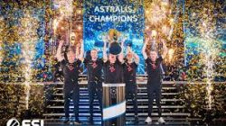
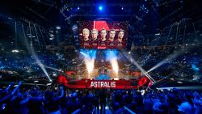

Qui si possono vedere sia il team che il loro premio vinto alle Blast Pro Series del 2019.

Qui si possono vedere sia il team che il loro premio vinto alle Blast Pro Series del 2019.
Questi sono solo 3 campionati vinti(ne hanno vinti più di 40 e partecipato ad oltre 100).
| 09/12/2018 | Primi | Intel Grand Slam Season 1 | 1,000,000 dollari portati a casa |
| 08/09/2019 | Primi | Starladder Berlin Major 2019 | 500,000 dollari vinti |
| 23/09/2018 | Primi | FACEIT Major: London 2018 | 500,000 dollari |
Sotto si può vedere il team al'IEM Katowice del 2019.
Premessa , come citato sopra questi match sono solo una piccola parte di quanto realmente fatto dal team.
| 29/02/2020 | Intel Extreme Masters XIV - World Championship | Perso 2 : 0 | vs Na'Vi(Natus Vincere) |
| 27/02/2020 | Intel Extreme Masters XIV - World Championship | Vinto 2 : 0 | vs Fnatic |
| 25/02/2020 | Intel Extreme Masters XIV - World Championship | Vinto 2 : 0 | vs Vitality |
Ho preso alcune delle partite giocate di recente.
Infine da questa foto si può notare quanto siano seguiti questi eventi e di come gli Astralis siano sempre con un passo avanti agli altri(Starlladder del 2019).
